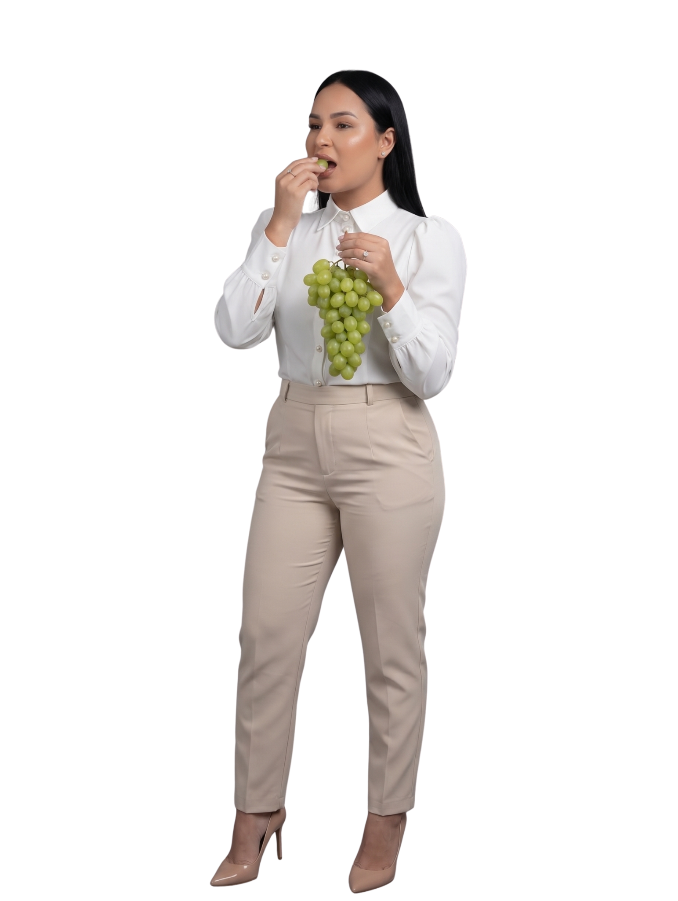
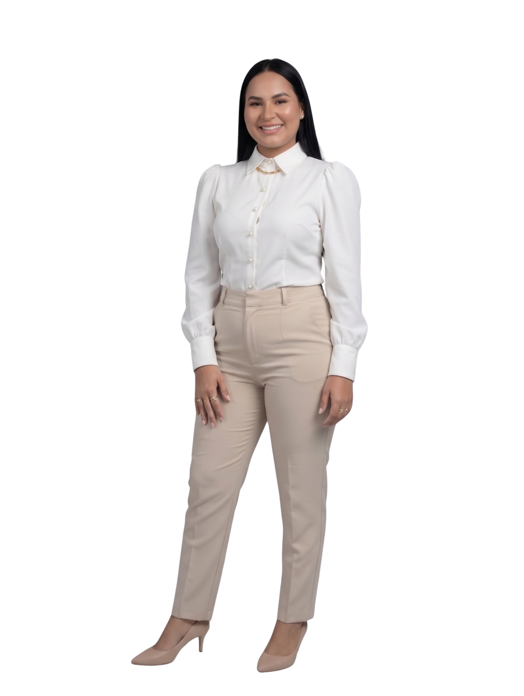

Compreender
Avaliação da sua rotina, histórico, objetivos, dificuldades e preferências.
Nutrição clínica para mulheres
Acompanhamento nutricional presencial em Juiz de Fora e on-line, com uma estratégia personalizada para sua rotina, seus objetivos e sua relação com a comida.
Uma alimentação possível, construída para a sua vida real.
Presencial em Juiz de Fora • Atendimento on-line
Nutrição possível para a vida real.
Uma outra forma de cuidar
Uma rotina saudável pode incluir o almoço de domingo, o bolo feito pela família, uma refeição fora do planejamento e os momentos que tornam a vida especial. O acompanhamento nutricional deve ajudar você a fazer escolhas com mais consciência — e não viver com medo ou culpa por comer.
Orientações adaptadas aos seus objetivos, necessidades e rotina.
Uma alimentação saudável sem transformar cada refeição em uma regra.
Hábitos possíveis de manter mesmo depois que a motivação diminui.
O acompanhamento
Não existe uma única alimentação ideal para todas as pessoas.
O acompanhamento começa com a compreensão da sua história, rotina, dificuldades, preferências e objetivos. A partir disso, é construída uma estratégia nutricional personalizada, que poderá ser ajustada ao longo do processo.
Conhecer o acompanhamento
Identificação
Como funciona
Avaliação da sua rotina, histórico, objetivos, dificuldades e preferências.
Construção de uma estratégia alimentar personalizada e aplicável.
Análise da evolução, das dificuldades e dos resultados percebidos.
Adaptações para que o processo continue funcionando na sua realidade.
Uma alimentação saudável precisa caber na vida que você realmente vive.
Áreas de acompanhamento
Um processo conduzido em ritmo possível, pensado para se manter depois que o objetivo é alcançado.
Ajustes graduais na alimentação do dia a dia, construídos a partir do que já existe na sua rotina.
Estrutura para refeições, compras e preparo, adaptada ao tempo que você realmente tem.
Um olhar que vai além do peso, considerando disposição, sono, rotina e bem-estar.
Menos culpa e mais consciência nas escolhas, inclusive nos momentos fora do planejamento.
Estabilização da glicemia e suporte neuroquímico para combater a fadiga mental, garantindo clareza, atenção prolongada e melhor rendimento em tarefas intelectuais complexas.

Sobre a profissional
Sou Zélia Helena, nutricionista clínica, e acredito que cuidar da alimentação não deveria significar viver em guerra com a comida.
Meu trabalho é construir, junto com cada paciente, uma estratégia que respeite sua saúde, seus objetivos e sua rotina.
Feedbacks
Espaço reservado para um relato real sobre a experiência com o acompanhamento.
Espaço reservado para um relato real sobre a experiência com o acompanhamento.
Espaço reservado para um relato real sobre a experiência com o acompanhamento.
Antes de conversarmos
Primeiro passo
Conte um pouco sobre o que você busca e dê o primeiro passo para entender qual acompanhamento pode fazer sentido para você.
Presencial em Juiz de Fora • Atendimento on-line